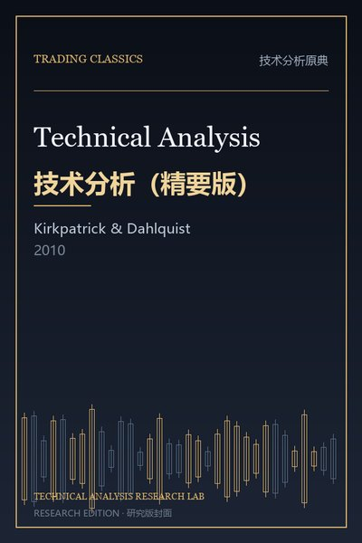
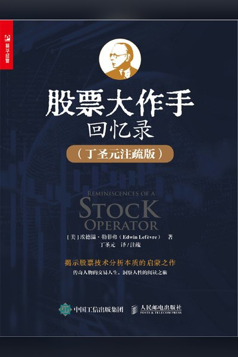
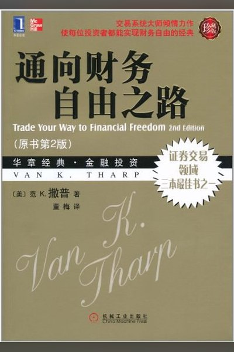
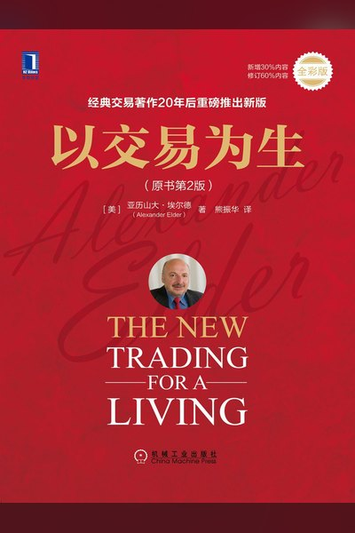

◈技术分析原典
奠定“趋势—形态—量价—支撑阻力”语言体系的奠基之作。

技术分析原典 · 核心原典
期货市场技术分析
技术分析领域的“标准教科书”：把道氏理论、趋势、形态、量价、指标与跨市场分析整合成一套完整语言。

技术分析原典 · 核心原典
股市趋势技术分析
形态分析的圣经：用“趋势线—通道—反转/持续形态—成交量”系统化描述价格结构。

技术分析原典 · 核心原典
技术交易系统新概念
现代指标的源头：RSI、ATR、ADX/DMI、抛物线 SAR 全部出自这本薄书，核心是“用波动率把风险量化”。

技术分析原典 · 核心原典
布林带法则
波动率通道的权威解释：布林带不是“超买超卖”信号，而是“相对高低”和“波动率收缩/扩张”的语言。

技术分析原典
日本蜡烛图技术
把东方蜡烛图引入西方：单根/组合 K 线是“多空当日博弈”的显微镜。

技术分析原典
技术分析（精要版）
在 Murphy 体系上加入学术证据与量化检验，是“技术分析是否有效”的现代总结。
↗趋势与系统交易
把“顺势而为”变成可执行、可统计、可复制的机械系统。

▤形态与价格行为
从 K 线、结构、箱体到形态突破，寻找高胜率的入场位置。

形态与价格行为 · 核心原典
笑傲股市（CAN SLIM 体系）
CAN SLIM：基本面成长 + 技术面突破 + 大盘方向的七要素选股系统。

形态与价格行为 · 核心原典
股票魔法师（SEPA / VCP）
用“趋势模板 + 波动收缩形态（VCP）+ 严格风控”捕捉超级强势股的主升浪。

形态与价格行为
我如何在股市赚了 200 万美元
箱体理论：价格在箱体中震荡，突破箱体上沿即买入，跌破下沿即止损。

形态与价格行为
高级趋势技术分析
逐根 K 线阅读价格行为：趋势、区间、突破、假突破与“永远在场”的框架。
形态与价格行为
缠论：市场哲学的数学原理
用“笔—线段—中枢—走势类型”构建严格的价格结构递归体系，判断趋势的完成与转折。
≋量价与订单流
价格是结果，成交与拍卖过程才是原因；量在价先。
∿震荡与均值回归
在区间市里寻找超买超卖的边界，赚“回归”的钱。


⛭量化与组合配置
用规则、因子与资产配置把单一技巧升级为可验证的策略。

⚠风险与心理
决定长期生死的不是入场，而是仓位、回撤与执行纪律。

风险与心理 · 核心原典
股票大作手回忆录
投机者的百年镜像：趋势、关键点、试仓、加仓与“截断亏损、让利润奔跑”。
风险与心理 · 核心原典
交易心理分析
交易是概率游戏：接受不确定性、用“五个基本事实”重建信念，才能稳定执行系统。
风险与心理 · 核心原典
金融怪杰（市场奇才）
对顶尖交易者的访谈合集：方法各异，但风控、纪律与心理共性惊人一致。

风险与心理 · 核心原典
通向财务自由之路
系统化交易的完整框架：期望值、仓位规模、R 乘数，比入场信号更重要。
风险与心理
反脆弱 / 黑天鹅
市场由稀有极端事件主导；与其预测黑天鹅，不如构建“损失有限、收益无限”的反脆弱结构。
风险与心理
聪明的投资者
价值投资圣经：安全边际、市场先生与“防御型/进取型”投资者的资产配置。

风险与心理 · 核心原典
以交易为生
三重滤网系统：长周期定方向、中周期找回调、短周期找入场，配合 2% 与 6% 风控规则。
风险与心理
打败华尔街的专业方法
通过对比巴菲特与索罗斯，提炼出“先保本、再盈利、专注能力圈、持续学习”的共通习惯。
◎市场结构与周期
理解市场如何拍卖、如何周期轮动，判断“现在该用哪套方法”。